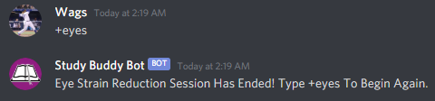
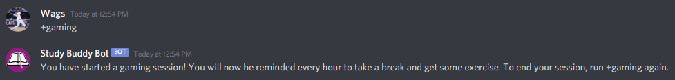

This command reminds you to look away from your screen every 20 min, following the 20-20-20 rule for eye strain. The command +eyes starts the eye strain reduction session, and calling the command again while a session is ongoing will cancel it. The reminders are sent directly to the user who requested the Studdy Buddy via their direct message inbox. To learn more about the 20-20-20 rule and its benefits to your health, watch this video made by the Canadian Association of Optometrists.
This command reminds you to look away from your screen every 20 min, following the 20-20-20 rule for eye strain. The command +eyes starts the eye strain reduction session, and calling the command again while a session is ongoing will cancel it. The reminders are sent directly to the user who requested the Studdy Buddy via their direct message inbox. To learn more about the 20-20-20 rule and its benefits to your health, watch this video made by the Canadian Association of Optometrists.
The pomodoro technique is a method designed to increase productivity and manage time. It involves work periods of 25 minutes each, followed by a 5 minute break. Every fifth work period is 30 minutes. Once called, the Study Buddy Bot will send you a direct message at the end of each work period to let you know when you should take a break, as well as letting you know when you should get back to work. Use the comman +pomodoro to begin this session, or end any ongoing sessions.

Everyone loves playing video games, but sometimes we can get a little carried away. To ensure you are staying healthy while having fun, the Study Buddy Bot allows you to start gaming sessions. The session begins by typing the command +gaming, and will send you a direct message every hour reminding you to take a break from the games. When you are done playing, simply re-type the command +gaming to end your session. For more info about the importance of taking breaks while gaming, check out this Acer article.
Everyone loves playing video games, but sometimes we can get a little carried away. To ensure you are staying healthy while having fun, the Study Buddy Bot allows you to start gaming sessions. The session begins by typing the command +gaming, and will send you a direct message every hour reminding you to take a break from the games. When you are done playing, simply re-type the command +gaming to end your session. For more info about the importance of taking breaks while gaming, check out this Acer article.